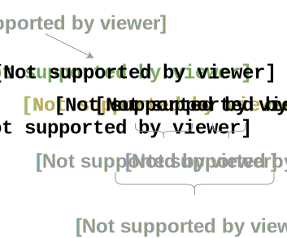

Bases
Sélecteurs
Fonts & style
Cheat Sheet : CSS
Bases
Anatomie d'une règle CSS

Sélecteurs
Nom de l'élément HTML sur lequel on veut appliquer la règle CSS. Pour en
sélectionner plusieurs qui regroupent les mêmes propriétés, on utilise des
",".
Basiques
Documentation MDN
Sélecteur de type
div {}
span {}
p {}
a {}
table {}
etc.
Sélecteur de classe, d'identifiant et d'attributs
.important {} #important {} div .important {} input[type="valeur"] {} p #attribut * {}
Combinateurs
div + p {} permet de sélectionner les p qui suivent la div
p ~ span {} permet de sélectionner les span qui ont le même parent
ul > li {} permet de sélectionner tous les li enfants directs de ul
div p {} permet de sélectionner tous les descendants p (pas
nécessairement directs) de div.
col || td {} permet de sélectionner n'importe quel élément td dans une
colonne col.
Pseudo-éléments
Documentation MDN
Permet de mettre en forme seulement certains éléments du sélecteur.
Syntaxe
sélecteur ::pseudo-élément {propriété : valeur};
.class::after #id::before p::first-letter p::first-line ::placeholder
Pseudo-classes
Documentation MDN
Permet de sélectionner les éléments selon l'état que l'on souhaite attribuer (quand on passe la souris dessus par exemple).
a:active div:first-child p:first-of-type input:focus a:hover :last-child :last-of-type :nth-child(an+b) :nth-last-child(an+b) :nth-last-of-type(an+b) :nth-of-type (an+b) :only-child :only-of-type a:visited etc.
Fonts & style
Propriétés des fonts sur la MDN
font-family : Montserrat, sans cursif,
font-size : 10
letter-spacing : 2px
line-height : 25px
font-style : normal / italic / oblique
font-weight : bold / normal
text-decoration : underline / overline / dotted / line-through / ...
text-align : left
text-align : right
text-align : center
text-align : justify
text-transform : capitalize / uppercase /
background-color : lightblue
etc.
Images & Background